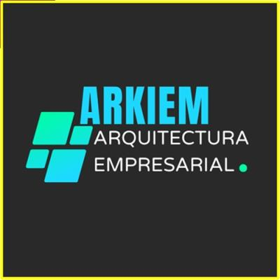

Aprende a alinear tecnología, estrategia y datos sin depender de marcos complejos
📘 Comprar ahoraARKIEM es una guía y un marco de trabajo para implementar la arquitectura empresarial en una organización sin depender de la complejidad de TOGAF.
Aprende qué es y cómo se construye paso a paso con un enfoque práctico y aplicable.
📄 Ebook • 122 páginas • ISBN registrado • Formato digital (PDF)
Muchas organizaciones invierten en tecnología a ciegas, sin guía, sin soporte de TI, generando proyectos fallidos y decisiones sin fundamento.
ARKIEM proporciona un enfoque estructurado para alinear los objetivos de la gerencia con TI y lograr un verdadero socio estratégico del negocio.
La percepción de desempeño de TI
TI como socio estratégico del negocio
Condiciones iniciales del proceso de AE
Equipo de trabajo de arquitectura
Core del proceso de implementación
Priorización de proyectos
Portafolio de proyectos
Planeación y ejecución
Roadmap tecnológico
Para soportar la visión estratégica con tecnología
Para convertir TI en socio estratégico
Para guiar la inversión en tecnología
Para entender y optimizar procesos core
$9.50 USD
💳 Pago en moneda local • Conversión automática al momento del pago
Comprar ahora✅ Acceso inmediato • 🔒 Pago seguro
Ingeniero de sistemas con más de 20 años de experiencia en desarrollo de software, arquitectura empresarial y analítica de datos.
Especialista en integración de tecnología, información y estrategia para la toma de decisiones organizacionales.